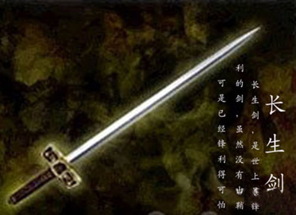

我来接一下吧
我来接一下吧真正的元旦 终于等到2009年的最后1天的最后1秒
感慨岁月蹉跎 吟诗以作乐！ 有诗兴的就跟帖吧 我先来一首
鞭烛除旧岁
清风送新怡
感叹长流水
前骋又高歌
我来接一下吧
接你最后一个字：
岁月如梭弹指过
怡然心宽少犯错
水长但却细细流
歌高五子慢慢说
［此帖子已被 茗弈小刀 在 2010-1-1 10:42:34 编辑过］
过儿黯然任蹉跎
错堪情深古来多
流水无情非缘拙
说尽千古泪儿落
［ 茗弈小刀 于 2010-1-1 11:08:10 时奖励此帖[金币加 20 威望加1］
我也接一个跎秤能称分量重
多退少补都好说
拙劣棋技却不同
落字无悔来报国
字打错了，落子无悔来报国。
 叔叔来淫兽淫兽~~
叔叔来淫兽淫兽~~
重笔谁手执
说尽坪间事
同弈云霄台
国器我心知
执器寻不见
事事水逝去
台石空凌乱
知否奕者语
［ 茗弈小刀 于 2010-1-1 15:22:21 时花20金币送鲜花一朵］
怪叔叔认真写狠强悍！
执子之手不弃
事业红火欢欣
台州遇见宇轩
知己良朋难求
见惯不惊坦然
去留无意随风
乱投名医问路
语出欲罢还休。
 很显然，强悍是必须的。
很显然，强悍是必须的。弃子随手间
欣然不顾死
轩眉遇红衣
求问而心思
然而图自语
风儿轻笑之
路遥追倩影
休得论我痴
间隔不太远
死囚亦脱险
衣袋虽空空
思维却不乱
语录也曾背
之乎全不懂
影踪难寻觅
痴迷长生剑
俺比较土，对诗一窍不通，
来顶个。。。
 。只想了一句：你们太有才了，佩服
。只想了一句：你们太有才了，佩服
霓裳依旧,青丝不在. 叹雪花飘飘,吟连珠愁愁. 棋坛倍有佳人出,开门见喜迎春来!
旧梦如昨，在所难忘，飘天地之悠悠，愁连珠之前程，出山棋坛佳人寻，来年定是功成就！